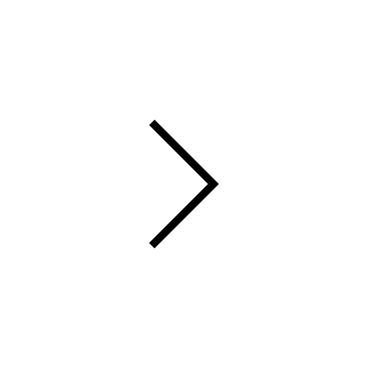

Process and Focus
Travelling through Peru, fasion brand Lauren Manoogian finds clarity in the craft that brings its vision into being.


Travelling through Peru, fasion brand Lauren Manoogian finds clarity in the craft that brings its vision into being.


12:19
Private View: Limb after Limb

19:04
NOWNESS Shorts: Blood Rites.

02:32
Video Art Visions: Quiladelphia

03:53
Great Escapes: La Iglesia de Tas